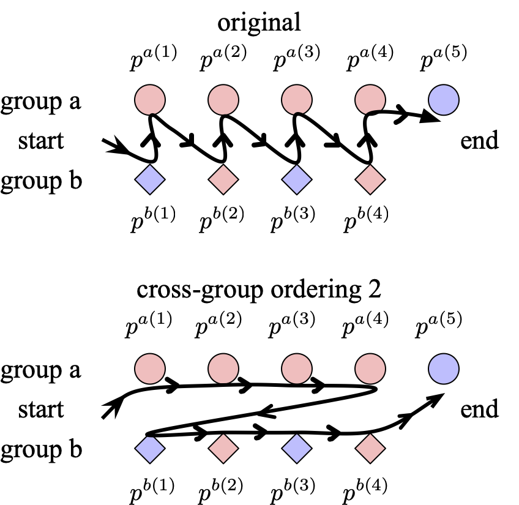
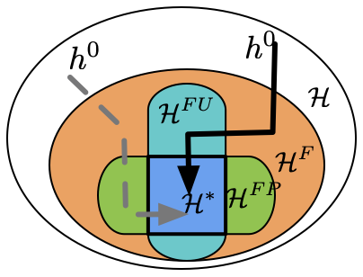
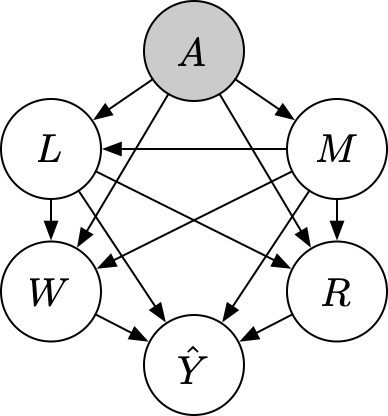
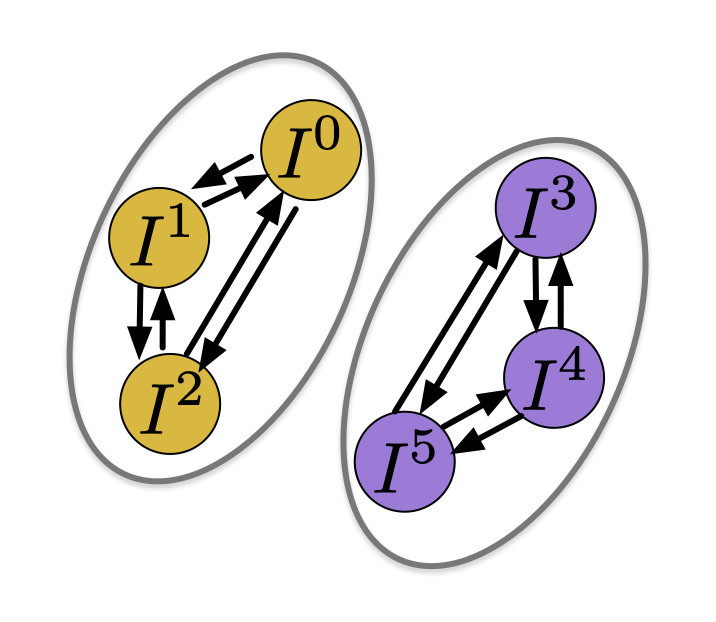
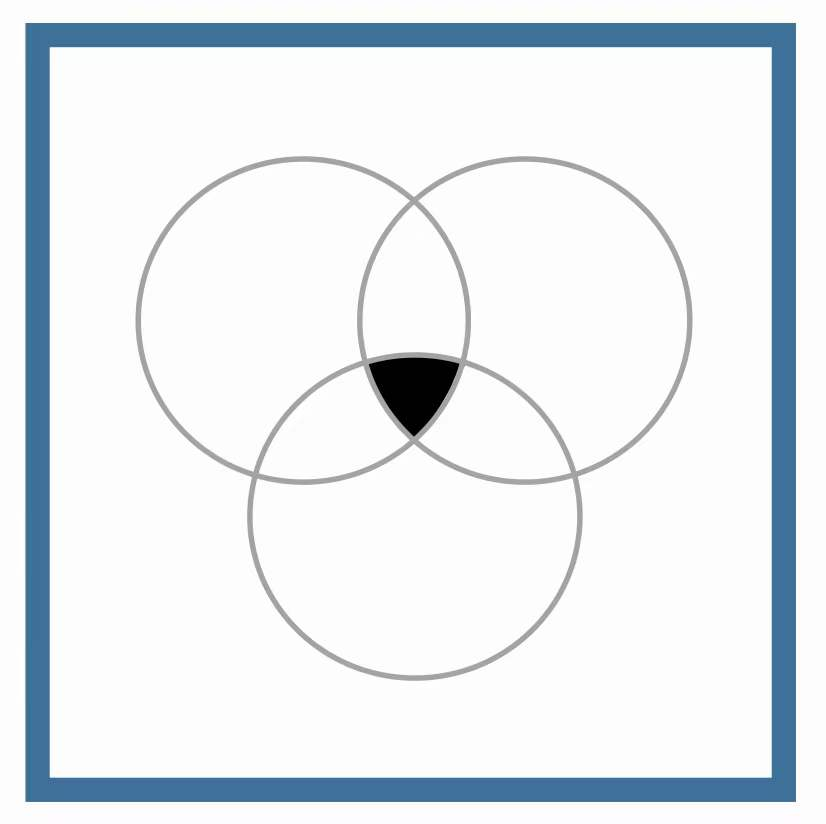

合作机构
崔森（Sen Cui）
关于我
我于 2024 年获得清华大学自动化系博士学位，导师为 张长水教授， 现为清华大学研究助理、水木学者。我于 2019 年毕业于清华大学航天航空学院 钱学森力学班（学堂计划）。同时，我是日本理化学研究所（RIKEN）先进智能研究中心（AIP） 的访问学者，与杉山将（Masashi Sugiyama）教授合作。
我的研究方向涵盖世界模型、具身智能与可信大模型，目标是构建能够理解、模拟并在真实世界中 安全可靠行动的物理 AGI 系统。
我在 NeurIPS、ICML、KDD、ICLR、IEEE TPAMI 等顶级会议与期刊上发表多篇论文， 并担任多个机器学习会议与期刊的审稿人。
🎓 招人： 诚招研究助理、实习生、本科生与合作伙伴，共同开展世界模型、具身智能与可信大模型方向的研究，欢迎随时联系我们！
研究
我的研究兴趣包括：
- 世界模型（World Models） — 学习物理世界的预测与生成模型，支持智能体的感知、推理、规划与仿真。
- 具身智能（Embodied Intelligence） — 开发能够在物理世界中感知、推理与行动的 AI 系统，融合视觉、语言与控制。
- 可信大模型（Trustworthy LLMs） — 提升大语言模型与基础模型的可靠性、公平性与安全性，解决幻觉、对齐与真实部署问题。
新闻
- 2026-08 欢迎加入 Physical RSI 实验室！我们正在招募研究助理、实习生与合作者，研究方向包括世界模型、具身智能与可信大模型。
- 2026-08 我们的工作 ConfAL-WM: Confidence-Guided Active Learning for Action-Conditioned World Models 已上传至 arXiv。
- 2026-08 我们的工作 MOSH-WM: Mask-Grounded Soft-Hamiltonian Dynamics for Object-Centric World Models 已上传至 arXiv。
- 2026-08 我们的工作 TRCA: Transition-wise Rubric Credit Assignment for Long-horizon LLM Agents 已上传至 arXiv。
- 2026-08 我们的工作 VERDI: Retrieval Is Not Transfer for Continual World Model Optimization 已上传至 arXiv。
- 2026-07 我们的工作 ElasticTTT: Prior-Preserving Test-Time Tuning for Video Editing 已上传至 arXiv。
- 2026-07 我们所在的 BAAI 团队发布了 Orca: The World is in Your Mind——多模态表征世界模型。
- 2026-07 我们的工作 EvoWorld: Evolving Panoramic World Generation with Explicit 3D Memory 被 ECCV 2026 接收。
- 2026-06 我们的工作 Gold Points Sniper: Self-guided Visual Reasoning in VLM for Fine-grained Action Understanding 被 ICRA 2026 接收。
- 2026-06 我们的工作 Deliberate Evolution: Agentic Reasoning for Sample-Efficient Symbolic Regression with LLMs 被 ICML 2026 接收。
- 2026-06 我们的工作 MetaForge: A Self-Evolving Multimodal Agent that Retrieves, Adapts, and Forges Tools On Demand 已上传至 arXiv。
- 2026-05 我们的工作 ECG-WM: A Physiology-Informed ECG World Model for Clinical Intervention Simulation 已上传至 arXiv。
- 2026-05 我们的工作 Physically Native World Models: A Hamiltonian Perspective on Generative World Modeling 已上传至 arXiv。
- 2026-04 我们的工作 CoDoL: Conditional Domain Prompt Learning for Out-of-Distribution Generalization 被 TMLR 2026 接收。
- 2026-03 我们的工作 Guideline-grounded Retrieval-Augmented Generation for Ophthalmic Clinical Decision Support 已上传至 arXiv。
- 2026-03 我们的工作 FATE: Closed-Loop Feasibility-Aware Task Generation with Active Repair for Physically Grounded Robotic Curricula 已上传至 arXiv。
- 2026-02 我们的工作 Scene2Demo: Self-Evolving Embodied Data Generation via Object-Action Graph 已上传至 arXiv。
- 2026-01 我们的工作 Reversible Diffusion Decoding for Diffusion Language Models 已上传至 arXiv。
- 2025-12 我们的工作 Beyond Similarity: Personalized Federated Recommendation with Composite Aggregation 被 ACM TOIS 接收。
- 2025-11 我们的工作 From Coefficients to Directions: Rethinking Model Merging with Directional Alignment 已上传至 arXiv。
- 2025-11 我们的工作 Merging without Forgetting: Continual Fusion of Task-Specific Models via Optimal Transport 已上传至 arXiv。
- 2025-11 我们的工作 Think Consistently, Reason Efficiently: Energy-Based Calibration for Implicit Chain-of-Thought 已上传至 arXiv。
- 2025-09 我们的工作 Decentralized Dynamic Cooperation of Personalized Models for Federated Continual Learning 被 NeurIPS 2025 接收。
- 2025-06 我们的工作 CALM: Consensus-Aware Localized Merging for Multi-Task Learning 被 ICML 2025 接收。
- 2025-05 我们的工作 Learning without Isolation: Pathway Protection for Continual Learning 被 ICML 2025 接收。
- 2025-05 我们的工作 Adaptive Localization of Knowledge Negation for Continual LLM Unlearning 被 ICML 2025 接收。
- 2025-05 我们的工作 Advancing Personalized Learning with Neural Collapse for Long-Tail Challenge 被 ICML 2025 接收。
经历

智源青年学者，北京智源人工智能研究院，2025 至今。

研究助理、水木学者，清华大学，2024 至今，导师张长水教授。

访问学者，RIKEN 先进智能研究中心（AIP），2023，导师杉山将教授。
博士，清华大学自动化系，2019 – 2024，导师张长水教授。

访问学者，加州大学伯克利分校机械工程系，2018 – 2019，导师 Masayoshi Tomizuka 教授。
本科，清华大学航天航空学院钱学森力学班（TEEP），2015 – 2019，导师郑泉水教授。
研究实验室 — Physical RSI
我们的使命是构建物理 AGI：像在数字世界中一样自然地感知、理解、模拟并作用于物理世界的 AI 系统。 为此，我们通过世界模型、机器人学习与基础模型扩展的融合，推动具身智能的前沿。 我们的研究议程围绕三大方向展开：
- 🌀 方向一 — 世界模型（World Models）： 如何让世界模型忠实模拟整个物理世界的运行？World Simulation, Physical Dynamics, Predictive Models, Causal Discovery, Digital Twins, Real2Sim2Real
- 🤖 方向二 — 具身 RSI 系统（Embodied RSI Systems）： 如何高效构建能够在真实世界中感知、推理与行动的物理 AGI 系统？Embodied Intelligence, Robot Learning, System Integration, Real-World Deployment
- 🦾 方向三 — 具身基础模型（Embodied Foundation Models）： 如何设计能够高效扩展为物理基础模型的模型架构？Scalable Architectures, Vision-Language-Action, Data Scaling, Model Scaling, Physical Grounding
💡 我们相信三大方向深度协同：忠实的世界模型为具身系统提供可大规模训练与压力测试的仿真基座， 具身系统的真实经验反过来锚定并校正世界模型；具身基础模型通过跨数据、算力与形态的统一扩展将二者合一。 我们的长期愿景是安全、高效地构建一个能够理解、模拟并作用于世界的物理 AGI。
代表性论文
（* 表示共同一作 / 通讯 / 项目负责人）





SIGKDD 2022 / Paper
